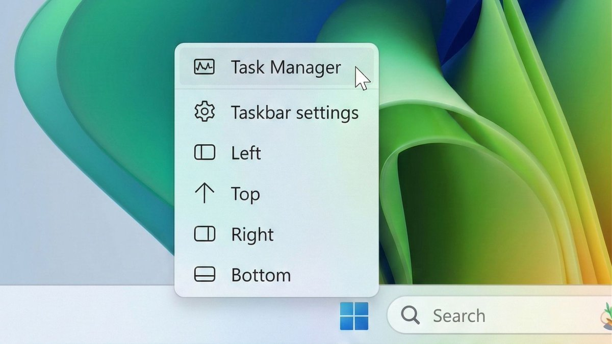

结论：很不情愿！
活该再被骂个一两年才从良吗？微软
为什么搞到最后我也开始不敢用outlook了？甚至让我开始想自建email？好好反省一下吧（
而且 降低RAM使用这事还有待长期观察

活该再被骂个一两年才从良吗？微软
为什么搞到最后我也开始不敢用outlook了？甚至让我开始想自建email？好好反省一下吧（
而且 降低RAM使用这事还有待长期观察

微软服软了。
Windows 11声誉跌到谷底后，执行副总裁Pavan Davuluri发布长文《Our commitment to Windows quality》，几乎是一封没有道歉的道歉信。
核心改动：
1）Copilot踩刹车。从Notepad、Photos、Snipping Tool、Widgets中移除AI入口。不再到处塞按钮。 https://t.co/7x6IXCltcv
Windows 11声誉跌到谷底后，执行副总裁Pavan Davuluri发布长文《Our commitment to Windows quality》，几乎是一封没有道歉的道歉信。
核心改动：
1）Copilot踩刹车。从Notepad、Photos、Snipping Tool、Widgets中移除AI入口。不再到处塞按钮。 https://t.co/7x6IXCltcv